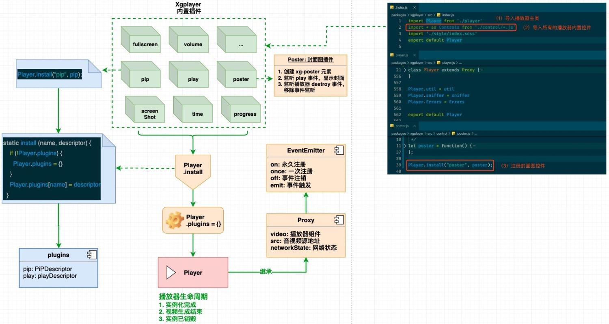
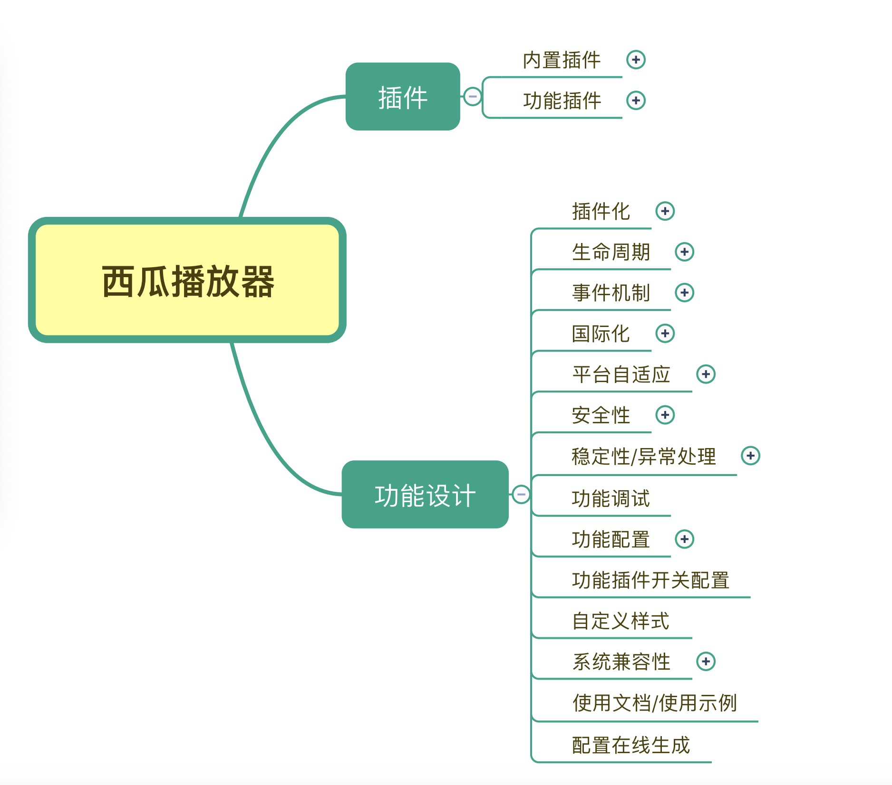
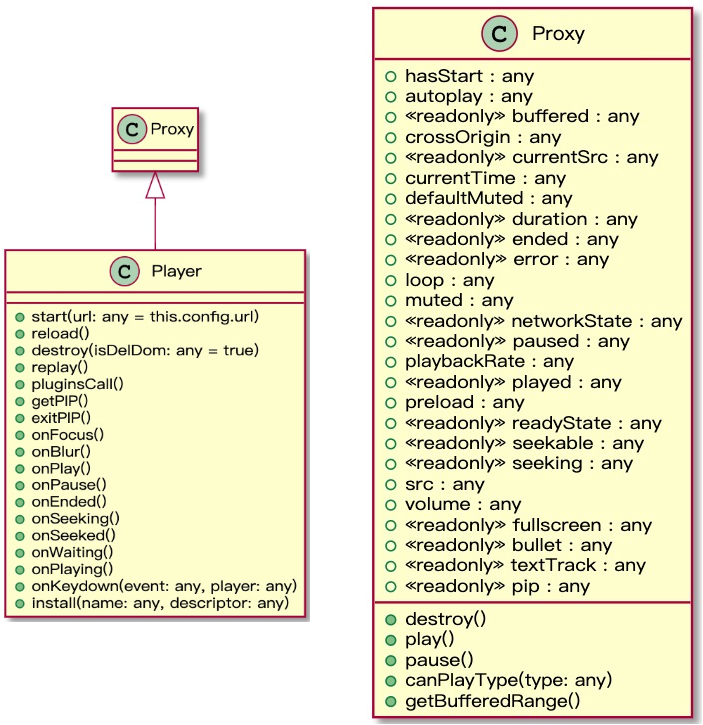
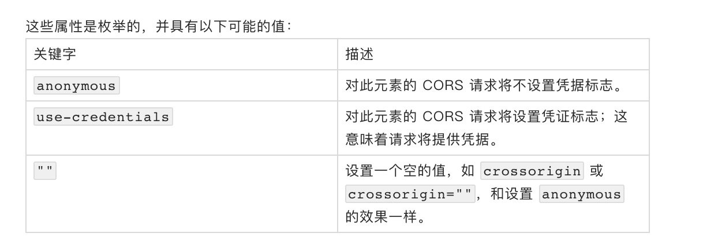
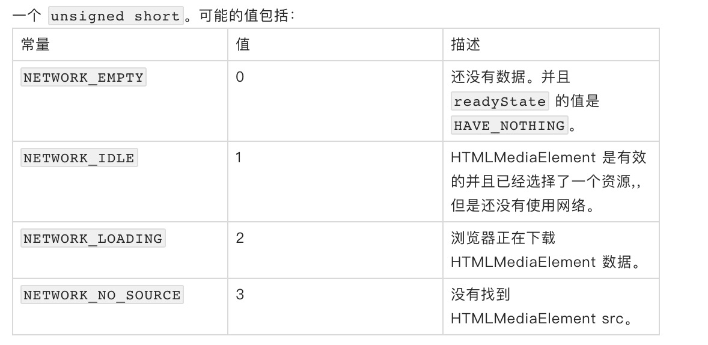
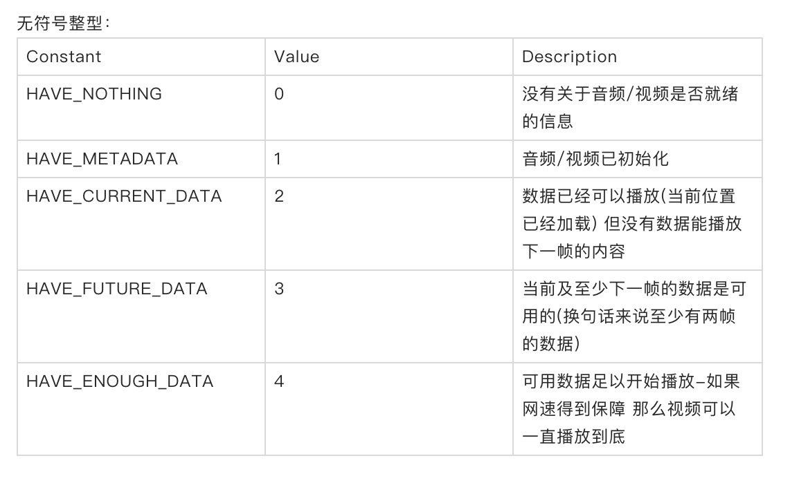

简介
西瓜视频播放器（HTML5）一款带解析器、能节省流量的 HTML5 视频播放器。它从底层解析 MP4、HLS、FLV 探索更大的视频播放可控空间。它具有以下功能特色：
- 易扩展：灵活的插件体系、PC/移动端自动切换、安全的白名单机制；
- 更丰富：强大的 MP4 控制、点播的无缝切换、有效的带宽节省；
- 较完整：完整的产品机制、错误的监控上报、自动的降级处理。
背景
字节跳动的视频业务大多数是短视频，早期的时候我们在 video.js 基础上做二次开发。**后来发现很多功能达不到我们的要求，比如自定义 UI 的成本、视频的清晰度无缝切换、视频流量的节省。考虑到当前点播依旧是 mp4 居多，我们做了个大胆的假设：在播放器端加载视频、解析视频、转换格式，让不支持分段播放的 mp4 动态支持，这样就无须转换源视频的格式，服务器端也无其他开销。**在这个动力下，我们在 2017 年年底完成了这项开发任务，并与2018 年年初测试了稳定性和经济收益。
在这个背景下，我们一次解析了 hls、flv 等视频，这样我们不再简单的依赖第三方的视频库，只有掌握了底层技术才有优化的可能性。在不断攻克 hls、flv 解析的背景下，我们增强了产品体验，比如交互效果、进场动画等。直到最近，我们想完善文档并把播放器源代码开源出来给更多的视频从业者一个参考，我们一起交流学习，共同进步。
一、西瓜播放器架构

1.1 功能分析思维导图

二、西瓜播放器 UML

三、内置插件功能分析
西瓜视频播放器主张一切设计都是插件，小到一个播放按钮大到一项直播功能支持。想更好的自定义播放器完成自己业务的契合，理解插件机制是非常重要的，播放器本身有很多内置插件，比如报错、loading、重播等，如果大家想自定义效果可以关闭内置插件，自己开发即可。
3.1 本地预览功能
播放器预览本地视频功能，不建议改动。源码
地址：
https://github.com/bytedance/xgplayer/blob/master/packages/xgplayer/src/control/localPreview.js
使用方式
new Player({
el:document.querySelector('#mse'),
url: 'video_url',
preview: {
uploadEl: uploadDom
}
});- 配置项：uploadEl
- 含义：Dom 元素，用于放置上传视频文件的相关控件
源码实现
let localPreview = function() {
let player = this;
let util = Player.util;
// util.createDom = function (el = 'div', tpl = '', attrs = {}, cname = '')
let preview = util.createDom(
"xg-preview",
'<input type="file">',
{},
"xgplayer-preview"
);
let upload = preview.querySelector("input");
if (player.config.preview && player.config.preview.uploadEl) {
player.config.preview.uploadEl.appendChild(preview);
upload.onchange = function() {
// https://developer.mozilla.org/zh-CN/docs/Web/HTML/Element/Input/file
// 选中文件通过 HTMLInputElement.files 属性返回 — 返回值是一个 FileList 对象,
// 这个对象是一个包含了许多 File 文件的列表
player.uploadFile = upload.files[0];
// objectURL = URL.createObjectURL(object);
// 参数 object：用于创建 URL 的 File 对象、Blob 对象或者 MediaSource 对象。
// URL.revokeObjectURL() 静态方法用来释放一个之前已经存在的、通过调用 URL.createObjectURL()
// 创建的 URL 对象。
// 当你结束使用某个 URL 对象之后，应该通过调用这个方法来让浏览器知道不用在内存中继续保留对这个文件
// 的引用了。比如 window.URL.revokeObjectURL(objectURL);
let url = URL.createObjectURL(player.uploadFile);
if (util.hasClass(player.root, "xgplayer-nostart")) {
player.config.url = url;
player.start();
} else {
player.src = url;
player.play();
}
};
}
};
Player.install("localPreview", localPreview);原理分析
视频本地预览的功能主要利用 URL.createObjectURL() API 来实现。URL.createObjectURL() 静态方法会创建一个 DOMString，其中包含一个表示参数中给出的对象的 URL。这个 URL 的生命周期和创建它的窗口中的 document 绑定。 这个新的 URL 对象表示指定的 File 对象或 Blob 对象。
注意❗
注意： 此特性在 Web Worker 中可用。
**注意：**此特性在 Service Worker 中不可用，因为它有可能导致内存泄漏。
- input file 获取本地 File 对象
- 把 File 对象转换为 ObjectURL
- 设置 Video 元素的 src 为视频本地的 ObjectURL 地址
扩展分析
1、前端本地图片预览的实现方式
前端本地图片预览，可以通过 FileReader.readAsDataURL 或 URL.createObjectURL 的方式来实现。
2、FileReader vs URL.createObjectURL
2.1 是否同步
- createObjectURL 是同步执行
- FileReader.readAsDataURL 是异步执行的
2.2 内存使用
- createObjectURL 方法会返回一个本地的 URL 地址，对象会一直保存在内存中，直到文档触发 unload 事件（比如 document close）或者手动调用 revokeObjectURL。
- FileReader.readAsDataURL 会返回 base64 格式的字符串，比 Blob URL 的方式会占用更多的内存空间，当你不需要使用它的时候，可以通过系统的垃圾回收机制来自动进行回收。
2.3 兼容性
- createObjectURL：支持 IE 10 以上的主流浏览器，详细的兼容性，可以查看 caniuse - createObjectURL。
- FileReader.readAsDataURL：支持 IE 10 以上的主流浏览器，详细兼容性，可以查看 caniuse - readAsDataURL
引用
参考资源 ——
filereader-vs-window-url-createobjecturl
3、createObjectURL 特性检测
function createObjectURL (file) {
if (window.webkitURL) {
return window.webkitURL.createObjectURL(file);
} else if (window.URL && window.URL.createObjectURL) {
return window.URL.createObjectURL(file);
} else {
return null;
}
}引用
参考资源 ——
how-to-choose-between-window-url-createobjecturl-and-window-webkiturl-create
4、插件优化项
- 为了避免大的视频通过 createObjectURL 方式进行预览会造成大量的内存占用，是否提供一套智能的回收方案，比如在特定时机点调用 revokeObjectURL 方法。
- 源码中 player.config.preview.uploadEl.appendChild(preview) 只是保证对象是否存在，并没有保证传入的对象一定是 DOM 元素。判断是否为 DOM 元素，可以使用以下的方法来判断：
function isElement(obj) {
try {
//Using W3 DOM2 (works for FF, Opera and Chrome)
return obj instanceof HTMLElement;
}
catch(e){
//Browsers not supporting W3 DOM2 don't have HTMLElement and
//an exception is thrown and we end up here. Testing some
//properties that all elements have (works on IE7)
return (typeof obj==="object") &&
(obj.nodeType === 1) && (typeof obj.style === "object") &&
(typeof obj.ownerDocument ==="object");
}
}Update 2
//Returns true if it is a DOM node
function isNode(o){
return (
typeof Node === "object" ? o instanceof Node :
o && typeof o === "object" && typeof o.nodeType === "number" && typeof
o.nodeName==="string"
);
}
//Returns true if it is a DOM element
function isElement(o){
return (
typeof HTMLElement === "object" ? o instanceof HTMLElement : //DOM2
o && typeof o === "object" && o !== null && o.nodeType === 1 && typeof
o.nodeName==="string"
);
}引用
参考资源 ——
how-do-you-check-if-a-javascript-object-is-a-dom-object地址：
https://stackoverflow.com/questions/384286/how-do-you-check-if-a-javascript-object-is-a-dom-object
3.2 播放器截图
播放器内部截图，截图格式可以自定义。源码
地址：
https://github.com/bytedance/xgplayer/blob/master/packages/xgplayer/src/control/screenShot.js
截图功能支持用户对当前视频播放窗口进行即时截屏，截图尺寸即为当前视频播放窗口的尺寸，截图默认为 .png 格式。
使用方式
new Player({
el:document.querySelector('#mse'),
url: 'video_url',
screenShot: true
})- 配置项：screenShot
- 默认值：false
- 参考值：true | false
源码实现
let screenShot = function () {
let player = this
let util = Player.util
if (!player.config.screenShot) {
return
}
let btn = util.createDom(
'xg-screenShot',
'<p class="name"><span>截图</span></p>',
{tabindex: 11},
'xgplayer-screenShot'
);
let canvas = document.createElement('canvas')
let canvasCtx = canvas.getContext('2d')
let img = new Image()
// 截图尺寸即为当前视频播放窗口的尺寸
canvas.width = this.config.width || 600
canvas.height = this.config.height || 337.5
// 添加截图按钮到播放器控件上
let root = player.controls
root.appendChild(btn)
let array = ['click', 'touchstart']
array.forEach(item => {
btn.addEventListener(item, function (e) {
e.preventDefault()
e.stopPropagation()
img.onload = (function () {
// https://developer.mozilla.org/zh-CN/docs/Web/API/CanvasRenderingContext2D/drawImage
// 例如：CSSImageValue，HTMLImageElement，SVGImageElement，HTMLVideoElement，
// HTMLCanvasElement，ImageBitmap 或者OffscreenCanvas。
canvasCtx.drawImage(player.video, 0, 0, canvas.width, canvas.height)
// https://developer.mozilla.org/zh-CN/docs/Web/HTML/CORS_enabled_image
// https://developer.mozilla.org/zh-CN/docs/Web/HTML/CORS_settings_attributes
// anonymous：对此元素的 CORS 请求将不设置凭据标志。
// use-credentials：对此元素的CORS请求将设置凭证标志；这意味着请求将提供凭据。
// ""：设置一个空的值，如 crossorigin 或 crossorigin=""，和设置 anonymous 的效果一样。
img.setAttribute('crossOrigin', 'anonymous')
img.src = canvas.toDataURL('image/png').replace('image/png', 'image/octet-stream')
let screenShotImg = img.src.replace(/^data:image\/[^;]+/,
'data:application/octet-stream')；
saveScreenShot(screenShotImg, '截图.png')
})()
})
})
}
Player.install('screenShot', screenShot)原理分析
播放器截图功能主要利用
CanvasRenderingContext2D.drawImage() API 来实现。Canvas 2D API 中的 CanvasRenderingContext2D.drawImage() 方法提供了多种方式在 Canvas 上绘制图像。drawImage API 的语法如下：
- void ctx.drawImage(image, dx, dy);
- void ctx.drawImage(image, dx, dy, dWidth, dHeight);
- void ctx.drawImage(image, sx, sy, sWidth, sHeight, dx, dy, dWidth, dHeight);
其中 image 参数表示绘制到上下文的元素。允许任何的 canvas 图像源(CanvasImageSource)，例如：CSSImageValue，HTMLImageElement，SVGImageElement，HTMLVideoElement，HTMLCanvasElement，ImageBitmap 或者 OffscreenCanvas。
- 创建截屏按钮并添加到播放器控制条上
- 创建 Canvas 元素和一个 Image 实例
- 为截屏按钮绑定事件监听，如 click 和 touchstart 事件
- 用户点击截屏时，触发对应的回调函数并通过 drawImage() 获取当前视频帧
扩展分析
1、Image 元素的 crossOrigin 属性
在 HTML5 中，一些 HTML 元素提供了对 CORS 的支持，例如 audio、image、link、script 和 video 均有一个跨域属性（crossOrigin property），它允许你配置元素获取数据的 CORS 请求。

默认情况下（即未指定 crossOrigin 属性时），CORS 根本不会使用。如 Terminology section of the CORS specification 中的描述，在非同源情况下，设置 “anonymous” 关键字将不会通过 cookies，客户端 SSL 证书或 HTTP 认证交换用户凭据。即使是无效的关键字和空字符串也会被当作 anonymous 关键字使用。
引用
参考资源 —— CORS_settings_attributes
地址：
https://developer.mozilla.org/zh-CN/docs/Web/HTML/CORS_settings_attributes
2、 HTMLCanvasElement.toDataURL()
HTMLCanvasElement.toDataURL() 方法返回一个包含图片展示的 data URI 。可以使用 type 参数其类型，默认为 PNG 格式。图片的分辨率为 96dpi。
- 如果画布的高度或宽度是 0，那么会返回字符串 “data:,。“
- 如果传入的类型非 “image/png”，但是返回的值以 “data:image/png” 开头，那么该传入的类型是不支持的。
- Chrome 支持 “
image/webp” 类型。
HTMLCanvasElement.toDataURL() 语法如下：
canvas.toDataURL(type, encoderOptions);- type 可选，图片格式，默认为 image/png
- encoderOptions 可选
在指定图片格式为 image/jpeg 或image/webp 的情况下，可以从 0 到 1 的区间内选择图片的质量。如果超出取值范围，将会使用默认值 0.92。其他参数会被忽略。
const canvas = document.getElementById("canvas");
const dataURL = canvas.toDataURL();
console.log(dataURL);
// "data:image/png;base64,iVBORw0KGgoAAAANSUhEUgAAAAUAAAAFCAYAAACNby
// blAAAADElEQVQImWNgoBMAAABpAAFEI8ARAAAAAElFTkSuQmCC"3、前端文件下载
方案一：
let saveScreenShot = function (data, filename) {
let saveLink = document.createElement('a')
saveLink.href = data
saveLink.download = filename
let event = document.createEvent('MouseEvents')
event.initMouseEvent('click', true, false, window, 0, 0, 0, 0, 0, false, false,
false, false, 0, null)
saveLink.dispatchEvent(event)
}方案二：
const a = document.createElement('a');
const url = window.URL.createObjectURL(blob);
const filename = 'what-you-want.txt';
a.href = url;
a.download = filename;
a.click();
window.URL.revokeObjectURL(url);DataURL 与 createObjectURL 方式的区别，可以阅读本地预览功能 > 扩展分析部分。
参考资源 —— 这应该是你见过的最全前端下载总结
4、自定义事件
let event = document.createEvent('MouseEvents')
event.initMouseEvent('click', true, false, window, 0, 0, 0, 0, 0, false, false,
false, false, 0, null)
saveLink.dispatchEvent(event)5、插件优化项
- let array = [‘click’, ‘touchstart’] 变量命名规范化，建议 array 命名为 events。
- saveScreenShot(screenShotImg, ‘截图.png’) 插件支持定义图片的格式和截图的名称，截图名称可以考虑使用 时间戳 + 固定后缀 的格式。
- 在播放器卸载的时候，执行相关的清理操作。比如回收 let img = new Image() 插件内创建的 Image 元素并解除该元素上已绑定的事件。
3.3 下载功能
播放器下载控件，可以自定义。源码
地址：
https://github.com/bytedance/xgplayer/blob/dev/packages/xgplayer/src/control/download.js
使用方式
视频下载控件，点击后下载视频。
let player = new Player({
download: true //设置download控件显示
});- 配置项：download
- 默认值：false
- 参考值：true | false
源码实现
import downloadUtil from "downloadjs";
const download = function() {
const player = this;
if (!this.config.download) {
return;
}
let container = player.root;
let util = Player.util;
// util.createDom = function (el = 'div', tpl = '', attrs = {}, cname = '')
let downloadEl = util.createDom(
"xgplayer-download",
`<xg-icon class="xgplayer-download-img"></xg-icon>`,
{},
"xgplayer-download"
);
let root = player.controls;
root.appendChild(downloadEl);
let tipsDownload =
player.config.lang && player.config.lang === "zh-cn" ? "下载" : "Download";
// util.createDom = function (el = 'div', tpl = '', attrs = {}, cname = '')
let tips = util.createDom("xg-tips", tipsDownload, {}, "xgplayer-tips");
downloadEl.appendChild(tips);
player.download = function() {
const url = getAbsoluteURL(player.config.url);
downloadUtil(url);
};
downloadEl.addEventListener("click", e => {
e.stopPropagation();
// must pass an absolute url for download
player.download();
});
downloadEl.addEventListener("mouseenter", e => {
e.preventDefault();
e.stopPropagation();
tips.style.left = "50%";
let rect = tips.getBoundingClientRect();
let rootRect = container.getBoundingClientRect();
if (rect.right > rootRect.right) {
tips.style.left = `${-rect.right + rootRect.right + 16}px`;
}
});
};
Player.install("download", download);原理分析
下载功能主要是通过动态创建下载按钮并为该按钮绑定 click 事件，当用户触发 click 事件时，在相应的回调函数中使用 downloadjs 这个库实现下载功能。
扩展分析
1、获取绝对路径
export const getAbsoluteURL = function (url) {
// Check if absolute URL
if (!url.match(/^https?:\/\//)) {
const div = document.createElement('div')
div.innerHTML = `<a href="${url}">x</a>`
url = div.firstChild.href
}
return url
}引用
参考资源 —— 前端下载文件 的6种方法的对比
3.4 播放器贴图
播放器贴图，不建议改动。源码
地址：
https://github.com/bytedance/xgplayer/blob/master/packages/xgplayer/src/control/poster.js
使用方式
封面图是当播放器初始化后在用户点击播放按钮前显示的图像。
new Player({
el:document.querySelector('#mse'),
url: 'video_url',
poster: '//abc.com/**/*.png'
});- 配置项：poster
- 默认值：”
- 参考值：‘https://i.ytimg.com/vi/lK2ZbbQSHww/hqdefault.jpg’
{kind=link}
源码实现
let poster = function() {
let player = this;
let util = Player.util;
// util.createDom = function (el = 'div', tpl = '', attrs = {}, cname = '')
let poster = util.createDom("xg-poster", "", {}, "xgplayer-poster");
let root = player.root;
// 是否使用默认的封面图
if (player.config.poster) {
poster.style.backgroundImage = `url(${player.config.poster})`;
root.appendChild(poster);
}
// 监听播放事件，播放时隐藏封面图
function playFunc() {
poster.style.display = "none";
}
player.on("play", playFunc);
// 监听销毁事件，执行清理操作
function destroyFunc() {
player.off("play", playFunc);
player.off("destroy", destroyFunc);
}
player.once("destroy", destroyFunc);
};
Player.install("poster", poster);原理分析
xgplayer 的插件基于 EventEmitter 事件系统，通过监听播放器的 play 事件来隐藏 poster 海报。此外通过监听播放器的 destory 事件来实现清理操作，比如移除 play 事件的监听器和 destroy 事件。
扩展分析
1、 poster.style.backgroundImage = url(${player.config.poster}) 未判断是否为有效 URL 地址
考虑到代码的健壮性，最好判断一下 player.config.poster 的属性值是否为合法的 URL 地址或 DataURL。另外为了避免用户设置的图片出现问题，导致页面出现异常，可以考虑降级处理，即设置 Fallback 图片。
div {
background-image: url('http://placehold.it/1000x1000'),
url('http://placehold.it/500x500');
background-repeat:no-repeat;
background-size: 100%;
height:200px;
width:200px;
}引用
参考资源 ——
fallback-background-image-if-default-doesnt-exist地址：
https://stackoverflow.com/questions/37588017/fallback-background-image-if-default-doesnt-exist
3.5 画中画
播放器画中画功能，不建议改动。源码
地址：
https://github.com/bytedance/xgplayer/blob/master/packages/xgplayer/src/control/pip.js
画中画功能支持用户在浏览网页其它内容时继续以小窗的形式观看视频，同时可以拖拽改变小窗在页面中的 fix 位置。
使用方式
new Player({
el:document.querySelector('#mse'),
url: 'video_url',
pip: true
});- 配置项：pip
- 默认值：false
- 参考值：true | false
源码实现
PiP 插件
exitPIP () {
util.removeClass(this.root, 'xgplayer-pip-active')
this.root.style.right = ''
this.root.style.bottom = ''
this.root.style.top = ''
this.root.style.left = ''
if (this.config.fluid) {
this.root.style['padding-top'] = `${this.config.height * 100 / this.config.width}%`
}
}player.getPIP
getPIP () {
let ro = this.root.getBoundingClientRect()
let Top = ro.top
let Left = ro.left
let dragLay = util.createDom('xg-pip-lay', '<div></div>', {}, 'xgplayer-pip-lay')
this.root.appendChild(dragLay)
let dragHandle = util.createDom(
'xg-pip-drag',
'<div class="drag-handle"><span>点击按住可拖动视频</span></div>', {tabindex: 9},
'xgplayer-pip-drag')
this.root.appendChild(dragHandle)
let draggie = new Draggabilly('.xgplayer', {
handle: '.drag-handle'
})
util.addClass(this.root, 'xgplayer-pip-active')
this.root.style.right = 0
this.root.style.bottom = '200px'
this.root.style.top = ''
this.root.style.left = ''
if (this.config.fluid) {
this.root.style['padding-top'] = ''
}
let player = this;
['click', 'touchstart'].forEach(item => {
dragLay.addEventListener(item, function (e) {
e.preventDefault()
e.stopPropagation()
player.exitPIP()
player.root.style.top = `${Top}px`
player.root.style.left = `${Left}px`
})
})
}player.exitPIP
exitPIP () {
util.removeClass(this.root, 'xgplayer-pip-active')
this.root.style.right = ''
this.root.style.bottom = ''
this.root.style.top = ''
this.root.style.left = ''
if (this.config.fluid) {
this.root.style['padding-top'] = `${this.config.height * 100 / this.config.width}%`
}
}原理分析
画中画插件通过动态设置播放器根容器的定位信息来实现小窗播放，在进入小窗模式之后，会使用 draggabilly 第三方库，实现在视图区拖拽小窗的功能。
扩展分析
1、requestPictureInPicture API
请求让该 video 元素进入画中画模式，返回一个 promise，如果没有异常，这个 promise 的值会是一个 PictureInPictureWindow 对象，这个对象就代表弹出的那个 PiP 窗口。
async function openPiP(video) {
try {
// 进入画中画模式
const pipWindow = await video.requestPictureInPicture()
...
} catch (e) {
console.error(e) // 处理异常
}
})哪一些情况下进入画中画模式会失败？一共有 5 种情况：
- 操作系统不支持、或者用户通过浏览器选项禁用了此功能，此时 document.pictureInPictureEnabled 属性会返回 false；
- 视频文件错误、或者没有视频流只有音频流；
- 此次请求不是由用户操作触发的，比如用户没有点击任何按钮，页面自动执行该方法，会被当做恶意行为拦截掉；
- 当前页面通过 feature-policy 禁用了画中画特性，此时 document.pictureInPictureEnabled 属性也会返回 false；
- 当前 video 元素通过 disablePictureInPicture 属性（HTML 属性和 DOM 属性均可）禁用了画中画特性。
2、video 元素新增的属性 disablePictureInPicture
通过该属性可以禁用 video 元素的画中画特性，右键菜单中的“画中画”选项会被禁用。
通过 HTML 属性：
<video src="..." disablePictureInPicture>通过 DOM 属性：
video.disablePictureInPicture = true。
3、video 元素新增的事件 enterpictureinpicture 和 leavepictureinpicture
video.addEventListener('enterpictureinpicture', function(pipWindow) {
// 进入了画中画模式，可以拿到 pipWindow 对象
});
video.addEventListener('leavepictureinpicture', function() {
// 退出了画中画模式
});4、document 上新增的方法 exitPictureInPicture()
因为一个页面只能打开一个 PiP 窗口，所以让 video 元素退出画中画模式的方法不在 video 元素自己身上，而在 document 上。这个方法也返回一个 promise，不过 promise 包的值是个 undefined。
5、document 上新增的属性 pictureInPictureElement 和 pictureInPictureEnabled
类似于
document.pointerLockElement 和 document.fullscreenElement， document.pictureInPictureElement 会返回当前页面中处于画中画模式的 video 元素，如果没有的话，返回 null。document.pictureInPictureEnabled 上面已经提到过了，在当前页面不支持或被禁用画中画模式的情况下会返回 false，否则返回 true。
6、PictureInPictureWindow 对象的 API
从 requestPictureInPicture() 方法的返回值和 enterpictureinpicture 事件的回调参数中可以拿到 pipWindow 对象，该对象有两个属性 width 和 height，还支持一个 resize 事件，在用户改变 PiP 窗口大小时会触发。
async function openPiP(video) {
const pipWindow = await video.requestPictureInPicture()
console.log(pipWindow.width, pipWindow.height) // 打印了默认的窗口大小
pipWindow.addEventListener('resize', function() {
console.log(pipWindow.width, pipWindow.height) // 用户改变 PiP 窗口大小时触发
})
}引用
参考资源 —— 浏览器中的画中画（Picture-in-Picture）模式及其 API
3.6 自定义插件
开发插件
// pluginName.js
import Player from 'xgplayer';
let pluginName=function(player){
// 插件逻辑
}
Player.install('pluginName',pluginName);使用插件
import Player from 'xgplayer';
let player = new Player({
id: 'xg',
url: '//abc.com/**/*.mp4'
})四、其它功能分析
4.1 获取 HTMLMediaElement 元素网络状态
HTMLMediaElement.networkState 属性表示在网络上获取媒体的当前状态。其语法如下：
const networkState = audioOrVideo.networkState;
使用示例
get networkState () {
let status = [{
en: 'NETWORK_EMPTY',
cn: '音频/视频尚未初始化'
}, {
en: 'NETWORK_IDLE',
cn: '音频/视频是活动的且已选取资源，但并未使用网络'
}, {
en: 'NETWORK_LOADING',
cn: '浏览器正在下载数据'
}, {
en: 'NETWORK_NO_SOURCE',
cn: '未找到音频/视频来源'
}]
return this.lang ? this.lang[status[this.video.networkState].en] :
status[this.video.networkState].en
}引用
参考资源 —— MDN - networkState
4.2 获取 HTMLMediaElement 元素就绪状态
HTMLMediaElement.readyState 属性返回音频/视频的当前就绪状态。其语法如下：
引用
const readyState = audioOrVideo. readyState;
 使用示例
get readyState () {
let status = [{
en: 'HAVE_NOTHING',
cn: '没有关于音频/视频是否就绪的信息'
}, {
en: 'HAVE_METADATA',
cn: '关于音频/视频就绪的元数据'
}, {
en: 'HAVE_CURRENT_DATA',
cn: '关于当前播放位置的数据是可用的，但没有足够的数据来播放下一帧/毫秒'
}, {
en: 'HAVE_FUTURE_DATA',
cn: '当前及至少下一帧的数据是可用的'
}, {
en: 'HAVE_ENOUGH_DATA',
cn: '可用数据足以开始播放'
}]
return this.lang ? this.lang[status[this.video.readyState].en] :
status[this.video.readyState]
}引用
参考资源 —— MDN - readyState
4.3 X5 内核 H5 同层播放器
同层页面内播放是标准的视频播放形态，在 video 标签中添加 x5-video-player-type：h5-page 属性来控制网页内部同层播放，可以在视频上方显示 html 元素。
x5-video-player-fullscreen 全屏方式
视频播放时将会进入到全屏模式
如果不申明此属性，页面得到视口区域为原始视口大小(视频未播放前)，比如在微信里，会有一个常驻的标题栏，如果不声明此属性，这个标题栏高度不会给页面，播放时会平均分为两块（上下黑块）
注： 声明此属性，需要页面自己重新适配新的视口大小变化。可以通过监听resize 事件来实现
<video id="test_video" src="xxx" x5-video-player-type="h5" x5-video-player-fullscreen="true"/>需要监听窗口大小变化（resize）实现全屏
window.onresize = function(){
test_video.style.width = window.innerWidth + "px";
test_video.style.height = window.innerHeight + "px";
}注意❗
为了让视频真正铺满全屏，可以适当让 video 的显示区域大于视口区域，这样在显示时在视口外的部截掉后，不会出四周黑边的情况。
x5-video-orientation 控制横竖屏
功能：声明播放器支持的方向
可选值： landscape 横屏，portraint 竖屏，默认值：portraint。
引用
参考资源 —— H5同层播放器接入规范
4.4 批量导入指定目录下的文件
在 xgplayer 项目的 index.js 文件中，会使用 import * as Controls from ‘./control/*.js’ 语句来批量导入播放器的所有内置插件：
// xgplayer/packages/xgplayer/src/index.js
import Player from './player'
import * as Controls from './control/*.js'
import './style/index.scss'
export default Player批量导入某个目录下的所有文件，这个功能是借助 babel-plugin-bulk-import 这个插件来实现的。除了使用上述插件之外，还可以借助 Webpack context API 来实现，具体如下：
/**
* Require Editor modules places in components/modules dir
* 一个webpack的api，通过执行require.context函数获取一个特定的上下文，主要用来实现自动化导入模块，
* 在前端工程中，如果遇到从一个文件夹引入很多模块的情况，可以使用这个api，它会遍历文件夹中的指定文件，
* 然后自动导入使得不需要每次显式的调用import导入模块。
*/
const contextRequire = require.context("./modules", true);
const modules = [];
contextRequire.keys().forEach((filename) => {
/**
* Include files if:
* - extension is .js or .ts
* - does not starts with _
*/
if (filename.match(/^\.\/[^_][\w/]*\.([tj])s$/)) {
modules.push(contextRequire(filename));
}
});